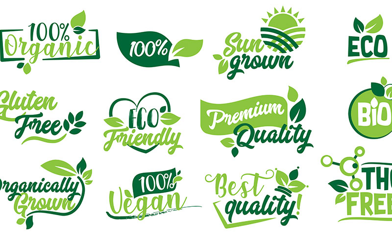

Tricks der Werbeindustrie
- Ziel der Werbung ist es die beworbene Marke oder das beworbene Produkt in das Bewusstsein / Unterbewusstsein der Kunden zu bringen und damit das Kaufverhalten zu beeinflussen.
- Heutzutage reichen einfache Werbespots mit den Vorteilen des Produkts nicht mehr aus. Man muss zu psychologischen Tricks greifen, um neue Kunden anzulocken und diese zu gewinnen.
- Heutzutage geht es weniger um das Wissen über eine Marke, es geht mehr um die Gefühle, die man mit dieser Marke verknüpft und die innere Einstellung.
- Werbung wird gezielt so gemacht, dass man sie nicht bewusst aufnimmt, denn dann würde man zu viel darüber nachdenken.
- Die Werbung wird so produziert, dass wir sie unbewusst aufnehmen. Dass wird erreicht, indem wir einfach überall damit konfrontiert werden, egal ob im Internet, auf Plakaten, in Werbespots im Fernsehen oder auch durch Product-Placement.
- Diese Werbung wird meistens nur unbewusst wahrgenommen. Man selber erinnert sich gar nicht daran, dass man diese Werbung dort gesehen hat.
- Heutzutage reichen einfache Werbespots mit den Vorteilen des Produkts nicht mehr aus. Man muss zu psychologischen Tricks greifen, um neue Kunden anzulocken und diese zu gewinnen.
- Heutzutage geht es weniger um das Wissen über eine Marke, es geht mehr um die Gefühle, die man mit dieser Marke verknüpft und die innere Einstellung.
- Werbung wird gezielt so gemacht, dass man sie nicht bewusst aufnimmt, denn dann würde man zu viel darüber nachdenken.
- Die Werbung wird so produziert, dass wir sie unbewusst aufnehmen. Dass wird erreicht, indem wir einfach überall damit konfrontiert werden, egal ob im Internet, auf Plakaten, in Werbespots im Fernsehen oder auch durch Product-Placement.
- Diese Werbung wird meistens nur unbewusst wahrgenommen. Man selber erinnert sich gar nicht daran, dass man diese Werbung dort gesehen hat.
Häufige Tricks
Emotionen:
Emotionale Inhalte werden vom Gehirn schnell und gut gespeichert.
Farben:
Auch Farben lösen Emotionen aus und wecken bestimmte Assoziationen z.B.:
- Grün wird häufig mit Hoffnung, Frische, Gesundheit und Nachhaltigkeit assoziiert
- Rot mit Leidenschaft, Liebe und Schärfe; Rot ist eine der meistgenutzten Farben, um die Aufmerksamkeit auf sich zu ziehen
- Weiß mit Unschuld und Sauberkeit
- Gelb mit Heiterkeit
- Mit Orange assoziiert man oft ein Angebot
- Blau steht für Vertrauen und Verlässlichkeit
- Die Farben, die für die Werbung eingesetzt werden, variieren je nach Branche und Kultur. Lebensmittelverpackungen werden zum Beispiel immer grüner, da das nachhaltig, biologisch und gesund wirkt.
- Grün wird häufig mit Hoffnung, Frische, Gesundheit und Nachhaltigkeit assoziiert
- Rot mit Leidenschaft, Liebe und Schärfe; Rot ist eine der meistgenutzten Farben, um die Aufmerksamkeit auf sich zu ziehen
- Weiß mit Unschuld und Sauberkeit
- Gelb mit Heiterkeit
- Mit Orange assoziiert man oft ein Angebot
- Blau steht für Vertrauen und Verlässlichkeit
- Die Farben, die für die Werbung eingesetzt werden, variieren je nach Branche und Kultur. Lebensmittelverpackungen werden zum Beispiel immer grüner, da das nachhaltig, biologisch und gesund wirkt.
Beispiel: Cola nutzt schon immer die Farben Rot und Weiß, da diese Signalfarben sind. Wie die Straßenschilder Rot – Weiß sind, um unsere Aufmerksamkeit auf sich ziehen, machen das viele Firmen auf der Welt.
Innovation:
- Erneuerungen werden mehrmals erwähnt und besonders betont und hervorgehoben, auch wenn diese winzig sind, erweckt es für den Kunden den Anschein als wäre es etwas ganz Neues.
Musik:
- Ein guter Jingle „brennt“ sich in das Gehirn und man vergisst ihn nie wieder.
- Außerdem denkt man immer, wenn man das Lied hört an die Marke/das Produkt.
- Außerdem denkt man immer, wenn man das Lied hört an die Marke/das Produkt.
"Kundenmeinungen":
- Oft werden in Werbespots vermeintliche Kunden befragt, die über ihre immer positiven Erfahrungen mit dem Produkt/der Marke sprechen. Dadurch vertraut man dem Produkt/der Marke mehr.
Unechte Lebensmittel:
- Bei Lebensmitteln werden oft keine echten Produkte für die Werbung verwendet. Z.B. bei den Burgern bei McDonald`s.
https://www.watson.ch/leben/food/122409319-mit-diesen-tricks-sieht-dein-essen-aus-aus-der-werbung-fein-ists-nicht (N.N.: In "watson". Veröffentlicht am 22.08.2019, 06:06 UTC+1. Abgerufen am 15.11.2021)
Zeitliche Begrenzung:
- Dadurch wird ein Gefühl von Druck auf den Kunden ausgeübt. Er denkt sich, er muss es jetzt kaufen oder gar nicht. Unter Zeitdruck trifft er vielleicht die Entscheidung etwas zu kaufen, was er sonst nicht gekauft hätte. Das Gleiche geschieht bei begrenzter Stückzahl.
Bekannte Personen:
- Bekannte Personen oder Stimmen in der Werbung verwenden. Ein Beispiel hierfür ist George Clooney und Nespresso. 2006 drehte er seinen ersten Werbespot und seitdem verknüpfen viele Menschen die beiden automatisch miteinander. Wenn Promis ein Produkt bewerben, denken viele es wäre gut, denn die nutzen es auch und kaufen es dann.
Beeinflussung durch „Greenwashing“
Quelle (N.N.: In "wissenschaft.de". Veröffentlicht am 22.11.2017. Abgerufen am 15.11.2021)
- Seitdem das Thema Nachhaltigkeit zu einem immer wichtigeren Thema für die Käufer wird, nutzt auch die Wirtschaft diese Gedanken zu ihrem Vorteil
- Die Käufer möchten heutzutage ökologische, fair prodozierte und gesunde, Produkte
- Da es für die Unternehmen viel zu teuer wäre, dass alles umzusetzen, setzen sie diese Sachen meistens nur scheinbar um, um Kunden zu gewinnen
- Es werden selbsterfundene Sigel genutzt, die keine festgelegte Bedeutung haben. Diese sollen nur den Anschein erwecken gesund oder nachhaltig zu sein
- Die Vorteile und guten Sachen an dem Produkt werden alle hervorgehoben und beworben, aber die negativen Sachen werden alle ignoriert
- Seitdem das Thema Nachhaltigkeit zu einem immer wichtigeren Thema für die Käufer wird, nutzt auch die Wirtschaft diese Gedanken zu ihrem Vorteil
- Die Käufer möchten heutzutage ökologische, fair prodozierte und gesunde, Produkte
- Da es für die Unternehmen viel zu teuer wäre, dass alles umzusetzen, setzen sie diese Sachen meistens nur scheinbar um, um Kunden zu gewinnen
- Es werden selbsterfundene Sigel genutzt, die keine festgelegte Bedeutung haben. Diese sollen nur den Anschein erwecken gesund oder nachhaltig zu sein
- Die Vorteile und guten Sachen an dem Produkt werden alle hervorgehoben und beworben, aber die negativen Sachen werden alle ignoriert

Beispiel „Quetschies“:
Auf der Verpackung steht, es sei sehr gesund und es bestehe aus 50% Frucht. Nirgendwo steht, dass das Produkt zu großen Teilen aus Fruchtzucker besteht, der zu den schnellen Kohlenhydraten gehört.
Mit dem Versprechen eines gesunden Fruchtsnacks lenkt man gleichzeitig von dem vielen Müll ab, der um einen Quetschie herum ist.
Mit dem Versprechen eines gesunden Fruchtsnacks lenkt man gleichzeitig von dem vielen Müll ab, der um einen Quetschie herum ist.
Product-Placement / Produktplatzierung
- Die Möglichkeiten von der Platzierung von Produkten erstrecken sich von Film und Fernsehen über Zeitungen und Zeitschriften bis hin zu Comics, Musik und Videospielen
- Die Umsätze werden durch Produktplatzierung in Filmen und Serien oftmals gut gesteigert
- Denn wenn wir Produkte dort sehen, werden wir beeinflusst und dazu verführt, das gesehene Produkt kaufen zu wollen
- Die Umsätze werden durch Produktplatzierung in Filmen und Serien oftmals gut gesteigert
- Denn wenn wir Produkte dort sehen, werden wir beeinflusst und dazu verführt, das gesehene Produkt kaufen zu wollen